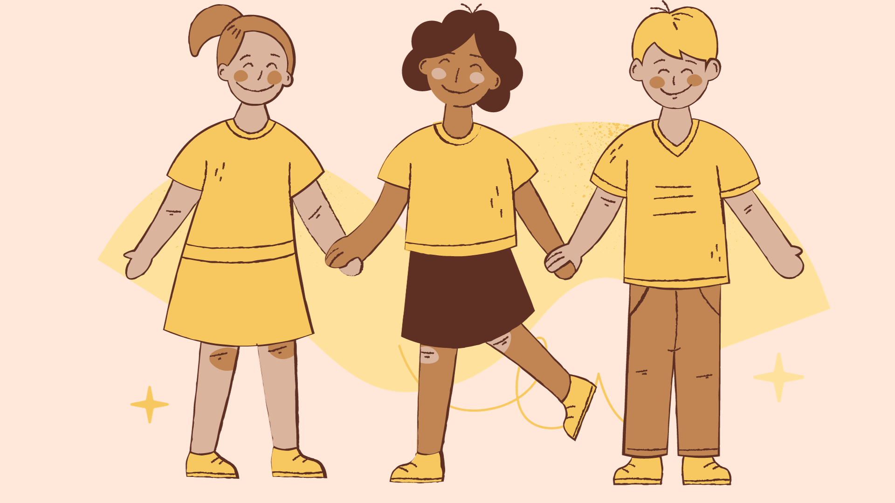

Stop Bullying
Bersama Kita Membangun Kebaikan!
Jadilah Teman Sejati
Berbagi Kebaikan
Hormati Perbedaan
Setiap tindakan baik memiliki dampak besar. Mari bersatu melawan perundungan dan menciptakan lingkungan yang aman dan menghargai perbedaan.